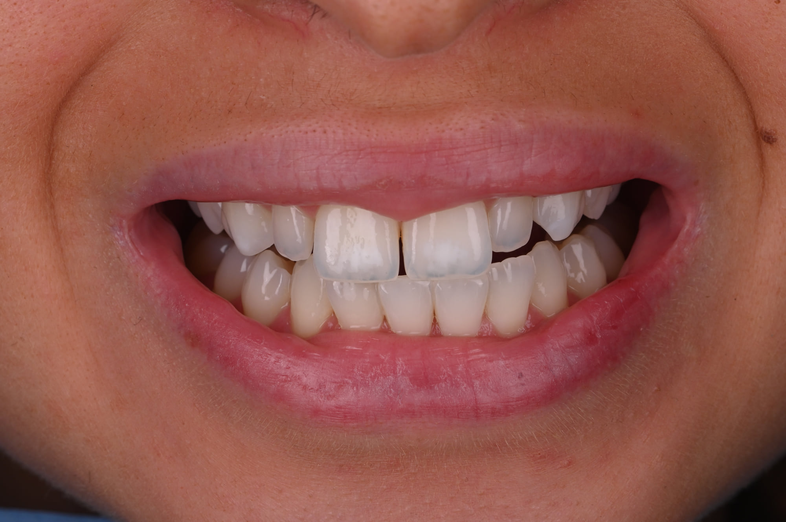
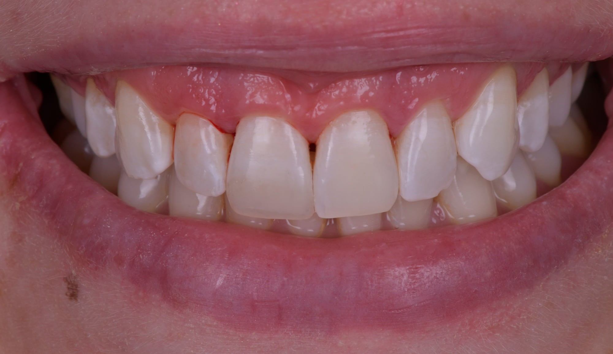
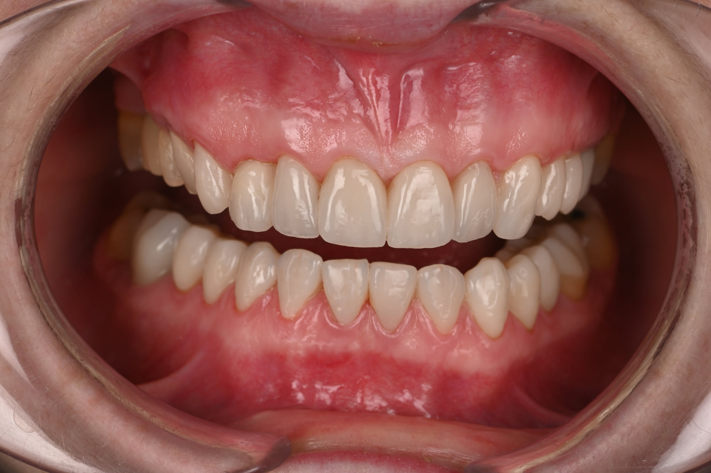
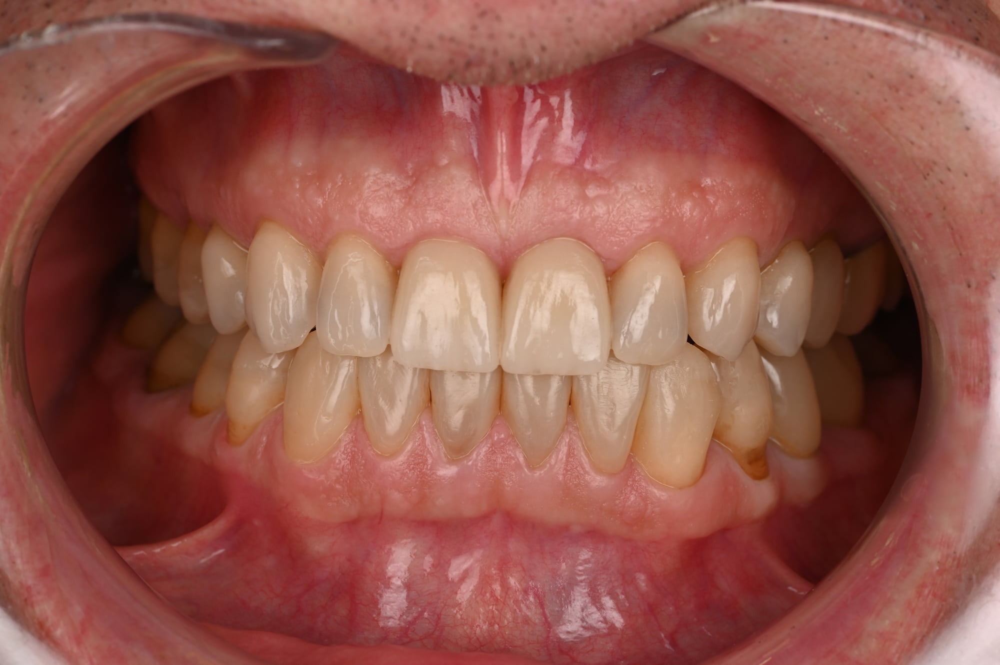
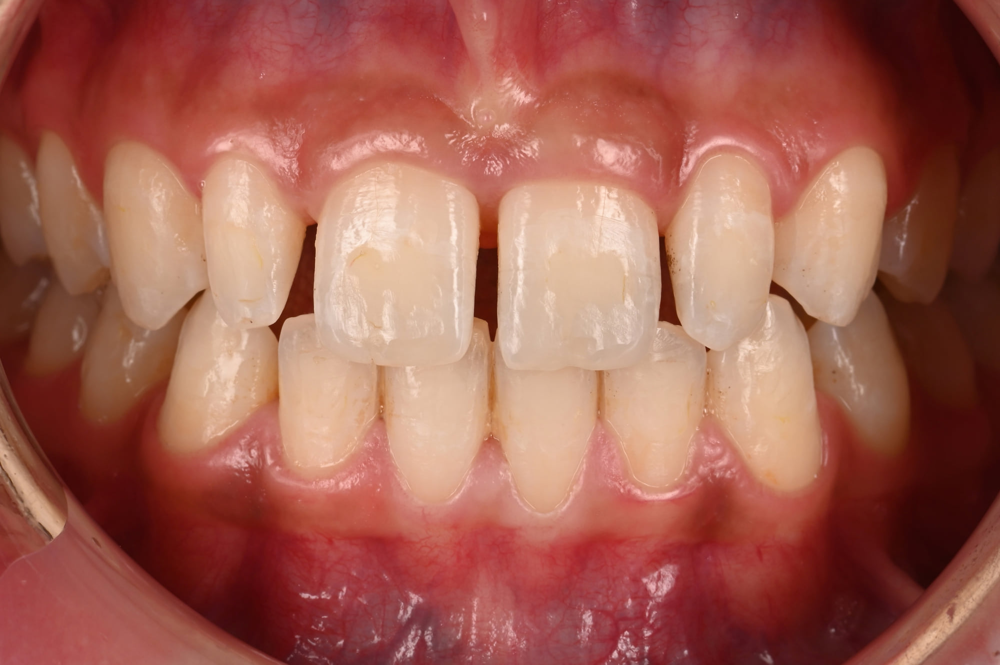
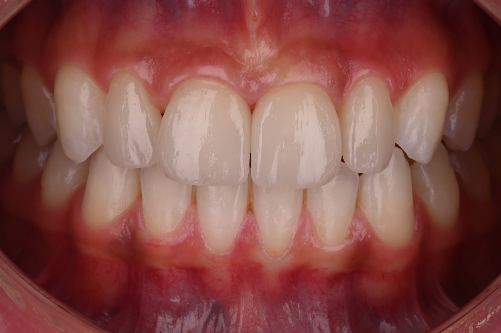

Bilan esthétique
Photographies, analyse du sourire, projet.
Dentisterie esthétique : la vue d’ensembleAccueil › Espace patients
Photographies, analyse du sourire, projet.
Dentisterie esthétique : la vue d’ensemble
Gouttières à domicile, suivi au cabinet.
Un cas documenté
Taches blanches, MIH, fluorose. Sans fraise.
Un cas documenté
Résine stratifiée sur la dent, en une séance.
Facettes ou composite ?
Céramique collée sur la face visible de la dent.
Facettes ou composite ? · Un cas documenté
Rendre la hauteur et la fonction.
Usure dentaire · Érosion · Bruxisme · Dents courtesCe que le chirurgien-dentiste repère en premier.
Anorexie restrictive : érosion sans vomissements
Diagnostic, gouttière composite, facettes.
Voir le cas →

Projet dessiné, essayé en bouche, puis posé.
Voir le cas →

Planification numérique, puis pose.
Voir le cas →

Éclaircissement, puis infiltration.
Voir le cas →
Chirurgien-dentiste à Paris 9e, exercice exclusif en dentisterie esthétique et adhésive. Praticien hospitalier, Pitié-Salpêtrière et CMME de Sainte-Anne.
Son parcours →2 rue Hippolyte Lebas, 75009 Paris.
Voir →01 83 75 52 16, ou par courriel.
Nous écrire →